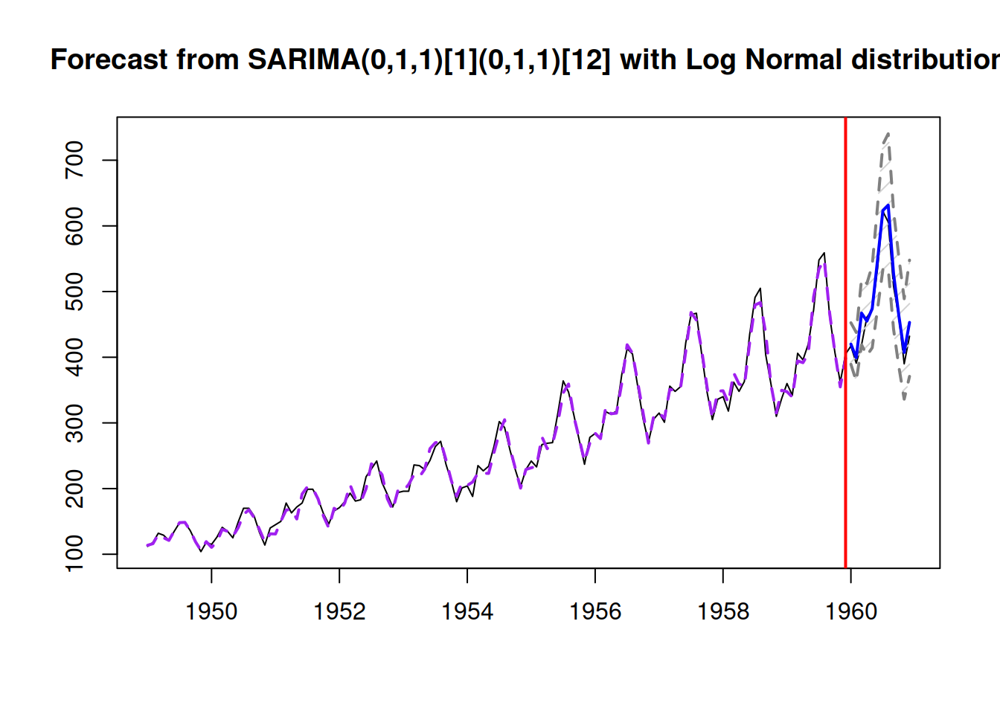

8.4 ARIMA and ETS
Box and Jenkins (1976) showed in their textbook that several exponential smoothing methods can be considered as special cases of ARIMA model. Because of that, statisticians have thought for many years that ARIMA is a superior model and payed no attention to the exponential smoothing. It took many years, many papers and a lot of effort Makridakis and Hibon (2000) to show that this is not correct, and that if you are interested in forecasting, then exponential smoothing, being a simpler model, typically does a better job than ARIMA. In fact, it was only after Ord et al. (1997) that the statisticians have started considering ETS as a separate model with its own properties. Furthermore, it seems that some of the conclusions from the previous competitions mainly apply to the Box-Jenkins approach (for example, see Makridakis and Hibon, 1997), pointing out that selecting the correct order of ARIMA models is much more challenging task than the statisticians have thought before.
Still, there is a connection between ARIMA and ETS models, which can be beneficial for both models, so it is worth discussing this in a separate section of the textbook.
8.4.1 ARIMA(0,1,1) and ETS(A,N,N)
Muth (1960) was one of the first authors who showed that Simple Exponential Smoothing has an underlying ARIMA(0,1,1) model. This becomes apparent, when we study the error correction form of SES: \[\begin{equation*} \hat{y}_{t} = \hat{y}_{t-1} + \hat{\alpha} e_{t-1}. \end{equation*}\] Recalling that \(e_t=y_t-\hat{y}_t\), this equation can be rewritten as: \[\begin{equation*} y_{t} = y_{t-1} - e_{t-1} + \hat{\alpha} e_{t-1} + e_t, \end{equation*}\] or after regrouping elements: \[\begin{equation*} y_{t} - y_{t-1} = e_t + (\hat{\alpha} -1) e_{t-1}. \end{equation*}\] Finally, using the backshift operator for ARIMA, substituting the estimated values by their “true” values, we get the ARIMA(0,1,1) model: \[\begin{equation*} y_{t}(1 - B) = \epsilon_t(1 + (\alpha -1) B) = \epsilon_t(1 + \theta_1 B), \end{equation*}\] where \(\theta_1 = \alpha-1\). This relation was one of the first hints that \(\alpha\) in SES should lie in a wider interval: based on the fact that \(\theta_1 \in (-1, 1)\), the smoothing parameter \(\alpha \in (0, 2)\). This is exactly the same region we get, when we deal with admissible bounds of ETS(A,N,N) model. This connection between the parameters of ARIMA(0,1,1) and ETS(A,N,N) is useful on its own, because we can transfer the properties of ETS to ARIMA. For example, we know that the level of ETS(A,N,N) will change slowly, when \(\alpha\) is close to zero. The similar behaviour would be observed in ARIMA(0,1,1) with \(\theta_1\) close to -1. In addition, we know that ETS(A,N,N) reverts to Random Walk, when \(\alpha=1\), which corresponds to \(\theta_1=0\). So, the closer \(\theta_1\) to zero, the more abrupt behaviour the ARIMA model exhibits. In cases of \(\theta_1>0\), the behaviour of the model becomes even more uncertain. In a way, this relation gives us the idea of what to expect from more complicated ARIMA(p,d,q) models, when the parameters for moving average are negative - the model should typically behave smoother, although this might differ from one model to another.
The main conceptual difference between ARIMA(0,1,1) and ETS(A,N,N) is that the latter still makes sense, when \(\alpha=0\), while in case of ARIMA(0,1,1) the condition \(\theta_1=-1\) is unacceptable. The global level model with \(\alpha=0\) corresponds to justa a different model, ARIMA(0,0,0) with constant.
Finally, the connection between the two models tells us that if we have ARIMA(0,1,q) model, then this model would be suitable for the data called “level” in ETS framework. The length of \(q\) would define the weights distribution in the model. The specific impact of each MA parameter on the actual values would differ, depending on the order \(q\) and values of parameters. The forecast from the ARIMA(0,1,q) would be a straight line, parallel to the x-axis for \(h\geq q\).
In order to demonstrate the connection between the two models we consider the following example in R using functions sim.es(), es() and ssarima() from smooth package:
# Generate data from ETS(A,N,N) with alpha=0.2
y <- sim.es("ANN", obs=120, persistence=0.2)
# Estimate ETS(A,N,N)
esModel <- es(y$data, "ANN")
# Estimate ARIMA(0,1,1)
ssarimaModel <- ssarima(y$data, c(0,1,1), initial="optimal")Given the the two models in smooth have the same initialisation mechanism, they should be equivalent. The values of their losses and information criteria should be the same:
# Loss values
setNames(c(esModel$lossValue, ssarimaModel$lossValue),
c("ETS(A,N,N)","ARIMA(0,1,1)"))## ETS(A,N,N) ARIMA(0,1,1)
## 546.0891 546.0891# AIC
setNames(c(AIC(esModel), AIC(ssarimaModel)),
c("ETS(A,N,N)","ARIMA(0,1,1)"))## ETS(A,N,N) ARIMA(0,1,1)
## 1098.178 1098.178In addition, their parameters should be related based on the formula discussed above. The following two lines should produce the same values:
# Smoothing parameter and theta_1
setNames(c(esModel$persistence, ssarimaModel$MA+1),
c("ETS(A,N,N)","ARIMA(0,1,1)"))## ETS(A,N,N) ARIMA(0,1,1)
## 0.1834037 0.1834037Finally, the fit and the forecasts from the two models should be exactly the same if the parameters are linearly related:
par(mfcol=c(2,1))
plot(esModel,7)
plot(ssarimaModel,7)
We expect the ETS(A,N,N) and ARIMA(0,1,1) models to be equivalent in this example because they are estimated using the respective functions es() and ssarima(), which are implemented in the same way, using the same framework. If the framework, initialisation, construction or estimation would be different, then the relation between the applied models might be not exact, but approximate.
8.4.2 ARIMA(0,2,2) and ETS(A,A,N)
Nerlove and Wage (1964) showed that there is an underlying ARIMA(0,2,2) for the Holts method, althought they do not say that exlicitly in their paper. Skipping the derivations, the relation between Holts method and the ARIMA model are expressed in the following two equations about their parameters (in the form of ARIMA discussed in this textbook): \[\begin{equation*} \begin{aligned} &\theta_1 = \alpha + \beta - 2 \\ &\theta_2 = 1 -\alpha \end{aligned} \end{equation*}\] We also know from the previous discussion that Holt’s method has underlying ETS(A,A,N) model, thus there is a connection between this model and ARIMA(0,2,2). This means that ARIMA(0,2,2) will produce linear forecasting trajectories for the data and that MA parameters of the model regulate the speed of update of the values. In fact, ARIMA(0,2,q) will produce straight line as a forecasting trajectory for any \(h\geq q\).
Similarly to the ARIMA(0,1,1) vs ETS(A,N,N), one of the important differences between the models is that the boundary values for parameters are not possible for ARIMA(0,2,2): \(\alpha=0\) and \(\beta=0\) are possible in ETS, but the respective \(\theta_1=2\) and \(\theta_2=-1\) are not. The model that corresponds to the situation, when \(\beta=0\), but \(\alpha \neq 0\) is formulated as ARIMA(0,1,0) with drift. The global trend ARIMA could hypothetically appear in the boundary case with \(\theta_1=-2\) and \(\theta_2=1\), implying the following model: \[\begin{equation*} y_t (1 - B)^2 = \epsilon_t - 2\epsilon_{t-1} + \epsilon_{t-2} = \epsilon_t (1 - B)^2 , \end{equation*}\] which tells us that in ARIMA framework, the global trend model is only available as a global mean on second differences of the data, there is no proper equivalent ARIMA for this.
Finally, the ETA(A,A,N) and ARIMA(0,2,2) will fit the data similarly and produce the same forecasts as long as they are constructed, initialised and estimated in the same way.
8.4.3 ARIMA(1,1,2) and ETS(A,Ad,N)
Roberts (1982) proposed damped trend exponential smoothing, showing that it is related to ARIMA(1,1,2), with the following connection between the parameters of the two: \[\begin{equation*} \begin{aligned} &\theta_1 = \alpha - 1 + \phi (\beta - 1) \\ &\theta_2 = \phi(1-\alpha) \\ &\phi_1 = \phi \end{aligned} . \end{equation*}\] At the same time, the damped trend method has underlying ETS(A,Ad,N), so there is a connection between the two models. Recalling that ETS(A,Ad,N) reverts to ETS(A,A,N), when \(\phi=1\), we can see a similar property in ATIMA: when \(\phi_1=1\), the model should be reformulated as ARMIMA(0,2,2) instead of ARIMA(1,1,2). Given the direct connection between the dampening parameters and the AR(1) parameter of the two models, we can conclude that AR(1) in the model defines the dampening effect of the forecasting trajectory. This is something that we have already noticed in a previous section. However, we should acknowledge that the dampening only happens, when \(\phi_1 \in (0,1)\). The case of \(\phi_1>1\) is unacceptable in ARIMA framework and is not very useful in case of ETS, producing explosive exponential trajectories. The case of \(\phi_1 \in (-1, 0)\) is possible, but is less useful in practice, as the trajectory will be oscilating.
The lesson to learn from the connection between the two models is that AR(p) part of ARIMA can act as a dampening element for the forecasting trajectories, although the specific shape would depend on the value of \(p\) and the values of parameters.
8.4.4 ARIMA and other ETS models
The pure additive seasonal ETS models also have connection with ARIMA, but the resulting models are not parsimonious. For example, ETS(A,A,A) is related to SARIMA(0,1,m+1)(0,1,0)\(_m\) (Chatfield, 1977; McKenzie, 1976) with some restrictions on parameters, and if we were to work with SARIMA and wanted to model the seasonal time series, we would probably apply SARIMA(0,1,1)(0,1,1)\(_m\) instead of this larger model.
When it comes to pure multiplicative and mixed ETS models, there are no appropriate ARIMA analogues for them. For example, Chatfield (1977) showed that there are no ARIMA models for the exponential smoothing with multiplicative seasonal component. In fact, this makes ETS distinct from ARIMA. The closest one can get to a pure multiplicative model is the ARIMA aplpied to logarithmically transformed data, when the smoothing parameters of ETS are close to zero, coming from the limit (6.5).
8.4.5 ETS + ARIMA
Finally, it is possible to have a combination of ETS and ARIMA, based on the discussion above, but not all combinations would be meaningful and helpful. For example, fitting a combination of ETS(A,N,N)+ARIMA(0,1,1) is not a good idea due to the connection of the two models. However, doing ETS(A,N,N) and adding ARIMA(1,0,0) component might be useful - the resulting model would exhibit the dampening trends as discussed before, but would have fewer parameters to estimate than ETS(A,Ad,N). In fact Gardner (1985) pointed out that using AR(1) together with some exponential smoothing methods improves the forecasting accuracy, so this sort of combination of the two models is potentially beneficial for ETS. In the next chapter we will discuss how specifically the two models can be united in one framework.